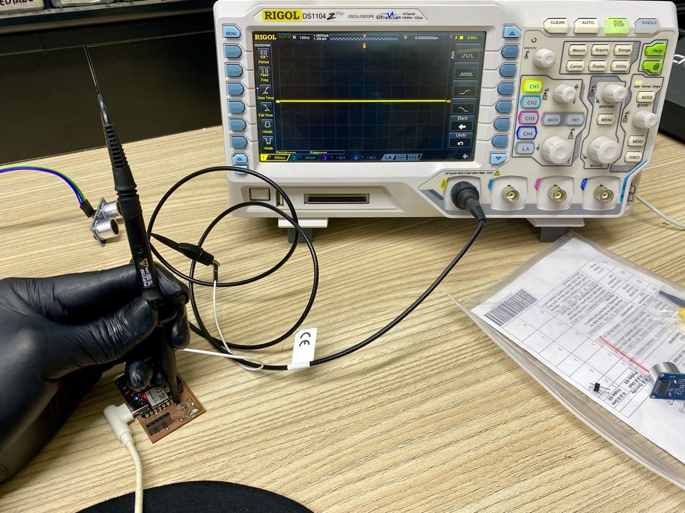

Welcome to Week 11
Input devices
Hey! now we will learn about Input Devices, for this week we have the following group and individual assignments:
- Group assignment:
- Individual assignment:
o Probe an input device(s)’s analog level and digital signals - ✅ Done
o Document your work on the group work page and reflect on your individual page what you learned - ✅ Done
o Measure something: add a sensor to a microcontroller board that you have designed and read it - ✅ Done
GROUP ASSIGNMENT
First, we will work with the ultrasound to see the behavior of the analog level and then we will try with a switch that turns on an LED as a digital signal. For this assignment we will use an oscilloscope which will help us visualize the behavioral waves.
Ready, now let's start with the ultrasound sensor, let's see the readings that the oscilloscope shows us and how it generates a wave of the various values that it reads.
Here I leave you a small video where you can better visualize the waves when they read different values.
Well, we have already observed how analog signals behave, it is our turn to show digital signals, come on!
For this part, we will use a pushbutton that is part of our shield, which will test for us the behavior of the digital signals.
Now let's observe the change when the pushbutton is activated.
The change was notable. This behavior occurs in digital readings where only values of 1 and 0 are given. I'll leave you with a video where this explanation can be better visualized.
Well now let's experiment a little this time with two widely used sensors, the DHT11 which is a humidity sensor and a PIR sensor, let's get started!
Here I leave you the programming so you can experience it too.
Here is a small video where we observe the data acquisition on our serial monitor
Looks good, now let's start with the PIR sensor
}Here I leave you the programming so you can experience it too.
Here is a small video where we observe the data acquisition on our serial monitor.
Well, we experimented with two sensors, one analog dht11 and one digital PIR, having a clear difference in terms of purposes while one offers us several values, another gives us values 0 and 1, I hope you enjoy analyzing the sensors and their readings.
Learning
Well we finished the assignment and we definitely did not take away important learnings:
o L1.
o L2.
See you next Week.